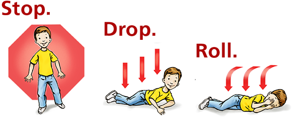
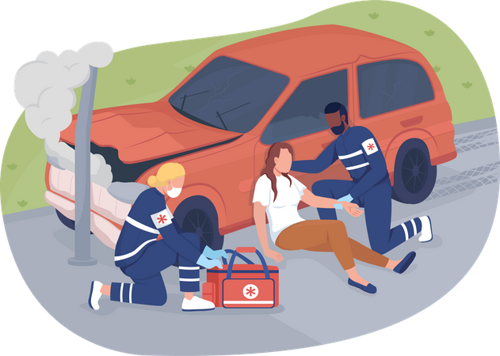
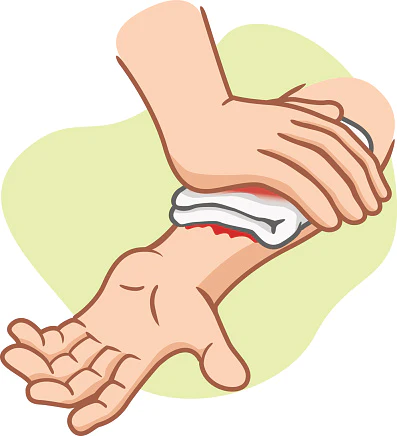
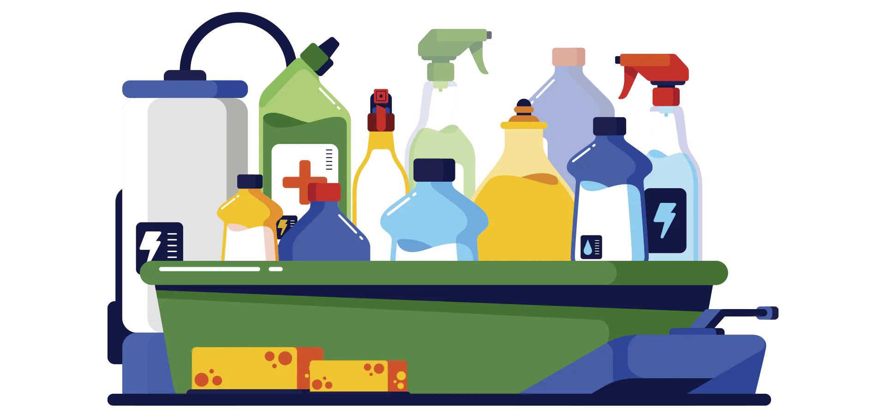
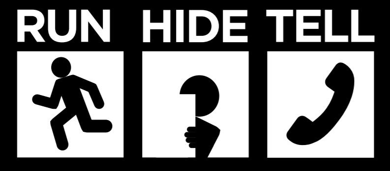

Emergency Response Guide
There are many emergency situations that you may come across.
Find out more information in the sections below - preparation is the most assured safety.
This page cannot cover all
eventualities however.
Fire
If your clothes catch on fire:
Stop what you're doing.
Drop to the ground and cover your face if you can.
Roll over and over or back and forth until the flames go out. Running will only make the fire burn faster.
Once
the flames are out, cool the burned skin with water for three to five minutes. Call for medical attention.

Tips for staying safe:
- If there is a fire extinguisher in the vicinity, follow the instructions shown to operate it safely
- Remember to GET OUT, STAY OUT and CALL 999 or your local emergency phone number
- Alert people of the fire. Always use the stairs instead of an elevator. Leave your belongings where they are and save yourself
- Never open doors that are warm to the touch. If handles are warm or smoke blocks your primary escape, use a second exit
- If you must escape through smoke, get low and go under the smoke to your exit. Close doors behind you
-
If smoke, heat or flames block your exit routes, stay in the room with doors closed. Place a wet towel under the door and call the
fire department or 999. Open a window and wave a brightly colored cloth or flashlight to signal for help
-
Once you are outside, go to your meeting place and then send one person to call the fire department. If you cannot get to your meeting
place, follow your family emergency communication plan
Traffic Accident
What to do when encountering a traffic accident:
- Make sure the incident area is safe for yourself and others
- Park safely and well away from the incident. Make sure you turn on your hazard lights
- Make vehicles safe by switching off the ignition of all damaged and surrounding cars and if you can, disconnect the battery
- Be alert for physical dangers such as traffic and make sure no one smokes near the incident
-
On large diesel vehicles this is marked on the outside.
Make vehicles stable. Apply the handbrake, put them in gear or put a
block in front of the wheels if the vehicle is upright.
If it is on it's side, try to stop it rolling over further, but do not attempt to move it
- Call the emergency services to report damaged power lines, spilt fuel or vehicles carrying hazardous substances

Assessing the casualties:
- Call 999 or 112 straight away
-
Assess the casualties quickly by doing the primary survey
1. Check for Danger.
2. Check for a Response.
3. Open Airway.
4. Check Breathing.
5. Check Circulation
-
Treat anyone with life threatening injuries first - Assume that anyone involved in the accident may have neck or spinal injuries
- Treat the casualties in the position you find them if possible and make sure you support their head and neck at all times
-
Make sure you search the surrounding area so that casualties who are not in the immediate incident area are found and treated - ask
others to do this if they are available
- If anyone is trapped inside or under a vehicle, the fire service will need to help them
- Monitor the casualties and record their breathing, pulse and level of response
Stabbing
Anyone who's been stabbed needs immediate help - their life could be at risk.
Just follow these steps and you could save someone's
life:
- Put pressure on the wound to help stop or slow the blood flow
- Call 999
- Keep pressure on the wound until an ambulance arrives
- If there is an object in the wound, don't remove it as this could make the bleeding a lot worse. Apply pressure around it.

If the person looks pale, feels cold and is dizzy, this means there isnit enough blood flowing through the body.
This physical
response to an injury is called shock, and it can be life-threatening.
If you suspect someone is going into shock:
- Continue to apply pressure to the wound to stop the blood coming out
-
Lie them down and lift their feet higher than the rest of their body.
This keeps their legs higher than their heart, which helps
increase blood flow to their brain and heart
- Reassure them and wrap them in coats or a blanket to keep them warm
Theft and Burglary
A theft or burglary can be a horrifying experience - an invasion of privacy and personal safety.
Here's what you can do if you ever experience it:
-
Phone the police on 101 to report the burglary. If you think the intruder(s) is still inside the property, dial 999 and if you're
worried that they might hear you, use the 'silent 999 call' option by pressing 55
- Move yourself to a point of safety and never try to confront an intruder
-
Until the police have assessed the situation, don't touch anything such as surfaces or entry points as there might be footprints,
fingerprints or DNA evidence that the police can use
- When the police arrive, give as many specific details as you can i.e. time
-
You will gain a police crime reference number (this is very important for your insurance). Whilst the police are in your property, do
take your own photos of the property and damage
-
Create a list of all missing items. Do check any sheds or garages as it might be that the burglar used one of your tools, or a ladder,
for entry
-
Call your home insurance company (within 24 hours of finding out about the burglary) and provide the crime reference number the police
gave you.
Provide the list you have of stolen items and around any damage. The insurance company might expect proof of purchase
or will seek extra information.
Tips for preventing theft
-
Thieves often target people who are distracted, so keeping your valuables including your mobile phone and other devices hidden ensures
you're more alert
- Stay alert when walking along the road for criminals who might use bikes/mopeds or e-scooters to snatch phones/valuables
- Earbuds/headphones can be a distraction
- Consider getting an alarm system installed
- Never leave your valuable items unattended even for a moment in a public setting
- Make sure software for being able to locate your phone is installed
Chemical Incident and Poisoning
Under certain conditions, chemicals can also be poisonous or have a harmful effect on your health.
Some chemicals that are safe, and even helpful in small amounts, can be harmful in larger quantities or under certain conditions.
Chemical accidents do happen, at home and in the community.
You may be exposed to a chemical in three ways:
- Breathing the chemical
- Swallowing contaminated food, water, or medication
- Touching the chemical, or coming into contact with clothing or things that have touched the chemical
Remember, you can be exposed to chemicals even though you may not be able to see or smell anything unusual.
Here are a few simple precautions that can help you avoid many chemical emergencies:
- Avoid mixing chemicals, even common household products. Some combinations, such as ammonia and bleach, can create toxic gases
- Always read and follow the directions when using chemical products
- Clean up any spills immediately, being careful to protect your eyes and skin
-
Never smoke while using household chemicals. Don't use hair spray, cleaning solutions, paint products, or pesticides near the open
flame

In case of Poisoning:
The most common home chemical emergencies involve small children eating medicines.
Keep all medicines, cosmetics, cleaning
products, and other household chemicals out of sight and out of reach of children.
If someone in your home does eat or drink a non-food substance, find the container it came out of immediately and take it with you to
the phone.
Call Emergency Services, or 999 to inform the operator of what was exactly ingested.
Follow their instructions carefully. Please be aware that the First Aid advice found on the container may not be appropriate.
So,
do not give anything by mouth until you have been advised by medical professionals.
Not Breathing/CPR
This advice is for helping an
adult:
-
Check breathing by tilting their head back and looking and feeling for breaths
When a person is unresponsive, their muscles
relax and their tongue can block their airway so they can no longer breathe.
Tilting their head back opens the airway by pulling the tongue forward
- Call 999 as soon as possible, or get someone else to do it
- If unresponsive, give chest compressions: push firmly downwards in the middle of the chest and then release at a regular rate
-
If you feel able to, combine chest compressions with breathing into their mouth or nose.
However, chest compressions are top
priority for try and keep oxygen flowing to the brain
This advice is for helping a
child:
-
Like the adult, check for breathing by tilting their head back and sensing for breaths.
Do this for no longer than 10 seconds
- Tell someone to call 999. If alone, call 999 after you've spent one minute giving them rescue breaths and chest compressions
- Give five rescue breaths: tilt their head back, seal your mouth over their mouth and nose. Blow five times into the baby
-
Give 30 chest compressions: push firmly in the middle of their chest with two fingers so that the chest goes inward, then release
- Give two rescue breaths. Continue with cycles of 30 chest compressions and two rescue breaths until help arrives
Acts of Terrorism
If you witness an act of terrorism either at home or abroad there are three basic steps that you should follow:
RUN
- to a place of safety. This is better than trying to surrender or negotiate.
HIDE - it is better to hide than confront. Barricade yourself in, turn your phone to silent and use only when it safe
to do so.
TELL - Alert police. Make sure you know the local emergency number - in the UK it's 999, for EU
countries it's 112.

If an event of Terrorism Occurs:
- Remain calm and be patient
- Follow the advice of local emergency officials
- Listen to your radio or television for news and instructions
- If the event occurs near you, check for injuries. Give first aid and get help for seriously injured people
-
If the event occurs near your home while you are there, check for damage using a flashlight. Do not light matches or candles or turn
on electrical switches. Check for fires, fire hazards and other household hazards. Sniff for gas leaks, starting at the water heater.
If you smell gas or suspect a leak, turn off the main gas valve, open windows, and get everyone outside quickly
- Shut off any other damaged utilities
- Confine or secure your pets
- Call your family contact—do not use the telephone again unless it is a life-threatening emergency
Emergency hotlines
In an emergency and need immediate help:
- Call 999 or go to your local A&E department
If you're in crisis and need to speak to someone:
- Call NHS 111 (for when you need help but are not in immediate danger)
- Use the 'Shout' crisis text line - text SHOUT to 85258
-
Contact the Samaritans (24 hour confidential emotional support for people who are experiencing feelings of distress, despair or
suicidal thoughts)
116 123 - www.samaritans.org
Other sources of support and advice:
-
Mind - for people experiencing a mental health difficulty
InfoLine: 0300 123 3393 to call, or text 86463 - www.mind.org.uk
- National Suicide Prevention Helpline UK - 0800 689 5652 (6pm-3:30am every day)
-
Childline - offers 24-hour free, private and confidential services to children and parents throughout the UK
0800 1111
-
Refuge - offers 24-hour services and support to women and children in the UK who are experiencing domestic abuse
0808 2000 247
-
Rape Crisis - provide information and support to all those affected by all forms of sexual violence and abuse
0808 500 2222